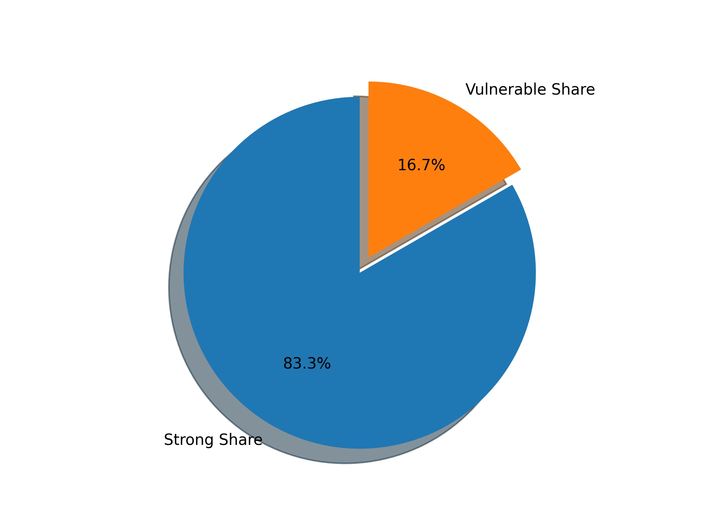

1. CVE 2020-1206漏洞檢測
2. CVE 2020-0796漏洞檢測
3. MS 08-067漏洞檢測
4. MS 17-010漏洞檢測
5. 風險帳號
6. 風險資料夾資訊

| 漏洞名稱 | cve_2020_1206 |
|---|---|
| 弱點敘述 | 該漏洞產生的原因是SMB的解壓縮函數Srv2DecompressData在處理發送給目標SMBv3服務器以偽造的息請求時，所產生問題，攻擊者可以讀取未初始化的kernel內存，還可以對壓縮函數進行修改。 |
| 建議措施 | 目前微軟官方已針對此弱點釋出更新程式，請至下列連結進行更新：https://portal.msrc.microsoft.com/en-US/security-guidance/advisory/CVE-2020-1206 |
| 風險IP |
10.10.70.21 10.10.70.117 10.10.70.52 10.10.70.101 10.10.70.53 10.10.70.3 10.10.70.100 10.10.70.27 10.10.70.73 10.10.70.51 10.10.70.119 10.10.70.72 10.10.70.1 10.10.70.60 10.10.70.29 10.10.70.118 10.10.70.22 10.10.70.70 10.10.70.102 10.10.70.111 10.10.70.42 10.10.70.4 10.10.70.110 10.10.70.115 10.10.70.113 10.10.70.25 10.10.70.2 |
| 漏洞名稱 | cve_2020_0796 |
|---|---|
| 弱點敘述 | 該漏洞遠讓遠端攻擊者可對目標系統之SMBv3服務發送特製請求或架設惡意的SMBv3伺服器誘騙受害者進行連線，導致遠端執行任意程式碼 |
| 建議措施 | 目前微軟官方已針對此弱點釋出更新程式，請至下列連結進行更新：https://portal.msrc.microsoft.com/en-US/security-guidance/advisory/CVE-2020-0796 |
| 風險IP |
10.10.70.21 10.10.70.117 10.10.70.116 10.10.70.52 10.10.70.101 10.10.70.53 10.10.70.3 10.10.70.100 10.10.70.27 10.10.70.73 10.10.70.51 10.10.70.119 10.10.70.72 10.10.70.1 10.10.70.60 10.10.70.29 10.10.70.118 10.10.70.22 10.10.70.70 10.10.70.71 10.10.70.102 10.10.70.31 10.10.70.111 10.10.70.42 10.10.70.4 10.10.70.110 10.10.70.115 10.10.70.113 10.10.70.25 10.10.70.2 |
| IP位置 | 10.10.70.52 | 資料夾資訊 |
資料夾： print$ 資料夾資料 Current user access READ {'prove': ['BIDI', 'color', 'IA64', 'w32x86', 'x64']} |
|---|
| IP位置 | 10.10.70.101 | 資料夾資訊 |
資料夾： scan 資料夾資料 Current user access READ/WRITE {'prove': ['0814.pdf', '1014', '1015', '1016', '1019', '1020', '1021', '1022', '1023', '1026', '1027', '1028', 'C0964-2.pdf', 'C0964-3.docx', 'C0964.pdf', 'IRB.pdf', 'scan (2).pdf', 'scan.jpg', 'scan.pdf', 'scan1.jpg', 'scan1.pdf', 'scan1_2020091710284200.pdf', 'scan1_2020092115300500.pdf', 'scan1_2020092310551800.pdf', 'scan1_2020100610403900.pdf', 'scan1_2020101410583900.pdf', 'scan1_2020101513385400.pdf', 'scan1_2020102008522800.pdf', 'scan1_2020102013551800.pdf', 'scan1_2020102109174000.pdf', 'scan1_2020102110332700.pdf', 'scan_01_的_02.jpg', 'scan_02_的_02.jpg', 'scan_2020051513165600.pdf', 'scan_2020051808383400.pdf', 'scan_2020052517052300.pdf', 'scan_2020060516065300.pdf', 'scan_2020060910483800.pdf', 'scan_2020060916564400.pdf', 'scan_2020061112564500.pdf', 'scan_2020061611462000.pdf', 'scan_2020061713483100.pdf', 'scan_2020061817234800.pdf', 'scan_2020061817240100.pdf', 'scan_2020062308183200.pdf', 'scan_2020062315494600.pdf', 'scan_2020062608224400.pdf', 'scan_2020062608225600.pdf', 'scan_2020062608231000.pdf', 'scan_2020062610465000.pdf', 'scan_2020062612422400.pdf', 'scan_2020063016513500.pdf', 'scan_2020070308420800.pdf', 'scan_2020070808241400.pdf', 'scan_2020070810550600.pdf', 'scan_2020070812194600.pdf', 'scan_2020071008114300.pdf', 'scan_2020071011242400_01_的_02.jpg', 'scan_2020071011242400_02_的_02.jpg', 'scan_2020071015223300.pdf', 'scan_2020071514131800.pdf', 'scan_2020072109083700.jpg', 'scan_2020072711481500.pdf', 'scan_2020072713292800.pdf', 'scan_2020072715143600.pdf', 'scan_2020072808135800.pdf', 'scan_2020072808141000.pdf', 'scan_2020072813212400.pdf', 'scan_2020080612292900.pdf', 'scan_2020081115130600.pdf', 'scan_2020081312482800.pdf', 'scan_2020081315504400.pdf', 'scan_2020081315510800.pdf', 'scan_2020081315511800.pdf', 'scan_2020081415124500.pdf', 'scan_2020090309134400.pdf', 'scan_2020090810130600.pdf', 'SU109025.pdf', 'Thumbs.db', '~$東港鎮婦女會自強活動.xlsx', '則蝶正在登打的聯絡資訊.xlsx', '安泰醫院報名表.pdf', '新冠肺炎期間訪客登記本.pdf', '私協-蘇主榮選任簡歷冊.pdf', '蘇清泉-利益衝突申明書.pdf', '蘇清泉-台灣外傷醫學會109年秋季學術研討會報名費回傳單.pdf', '蘇清泉-榮譽理事長的話.pdf']} |
|---|
| IP位置 | 10.10.70.3 | 資料夾資訊 |
資料夾： print$ 資料夾資料 Current user access READ {'prove': ['BIDI', 'color', 'IA64', 'w32x86', 'x64']} |
|---|
| IP位置 | 10.10.70.100 | 資料夾資訊 |
資料夾： scan 資料夾資料 Current user access READ/WRITE {'prove': ['0921主委核示.pdf', '1.pdf', '2.pdf', '3.pdf', 'B1664.pdf', 'B1892.pdf', 'scan2.pdf', 'scan2_2020091815535400.pdf', 'scan2_2020091815583100.pdf', 'scan2_2020091816010400.pdf', 'scan2_2020091816053800.pdf', 'scan2_2020091816245800.pdf', 'scan2_2020100616232400.pdf', 'scan2_2020100708344300.pdf', 'scan2_2020100708365600.pdf', 'scan2_2020100708373600.pdf', 'scan2_2020100708375300.pdf', 'scan2_2020100708383400.pdf', 'scan2_2020100708385200.pdf', 'scan2_2020100708392800.pdf', 'scan2_2020100708395800.pdf', 'scan2_2020100708403000.pdf', 'scan2_2020100708405700.pdf', 'scan2_2020100708412500.pdf', 'scan2_2020100708415400.pdf', 'scan2_2020100708420800.pdf', 'scan2_2020100709142700.pdf', 'scan2_2020100709154600.pdf', '簽核.pdf']} |
|---|
| IP位置 | 10.10.70.27 | 資料夾資訊 |
資料夾： Users 資料夾資料 Current user access READ {'prove': ['Default', 'desktop.ini', 'ND7', 'Public']} |
|---|
| IP位置 | 10.10.70.102 | 資料夾資訊 |
資料夾： scan 資料夾資料 Current user access READ/WRITE {'prove': ['old']} |
|---|